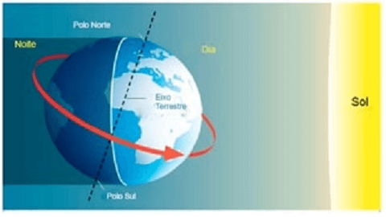

Texto 02 – Cartografia: representações do espaço geográfico, localização e coordenadas geográficas.
Conteúdo: Introdução à História da Cartografia; Mapas; Sistemas referenciais para
localização espacial: pontos cardeais; Rotação; coordenadas geográficas, longitude, latitude.
Objetivo: Entender a importância da Cartografia para a construção do conhecimento do
ser humano. Aplicar o sistema de coordenadas geográficas à localização de pontos na superfície terrestre.
Digite seu nome
Introdução
Na aula passada, vimos que o espaço geográfico e seus
conceitos auxiliares, constituem o objeto de estudo da Geografia, uma ciência envolvida com os aspectos
sociais e espaciais da sociedade.
Nesta aula, veremos como a Geografia, em colaboração com a Cartografia, dispõem de técnicas
para representar o espaço geográfico.
Ao final, você saberá qual a importância da Cartografia para o conhecimento do ser humano e,
também, aprenderá a localizar-se no espaço pelos pontos cardeais e pelas coordenadas geográficas.
Combine as imagens com textos sobre o tema da Cartografia. Valor: 3 globinhos.

×
0%
Referências bibliográficas
CARPANELLI,Francesca. La geografia in 30 lezioni. Geografia generale ed economica.
Itália:
Zanichelli, 2015.
FREITAS, Maria Isabel Castreghini de (Org.). Cartografia e Meio Ambiente. Rio Claro:
IGCE/UNESP; Bauru: FC/Unesp; CECEMCA. 2005.
SENE, Eustáquio de; MOREIRA, João Carlos. Geografia geral e do Brasil: espaço geográfico
e
globalização: ensino médio 3. ed. São Paulo: Scipione, 2016.
Yves Lacoste. A geografia – isso serve, em primeiro lugar, para fazer a guerra. 2. ed.
Campinas: Papirus, 2003 [1989]./p>